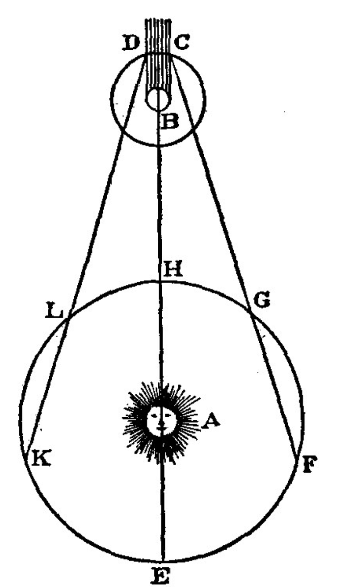

The speed of light is one of the most important constants and limitations in the realm of physics. Both in experimentation as well as fundamental knowledge of physics requires the familiarity of the speed of light. In the laboratory, the speed of light was measured using Foucault’s speed of light method of reflecting a beam of light from a mirror that rotates onto a fixed mirror and back. This creates two separate reflected beams with an angular displacement relating to the time that is required for the beam of light to travel a given distance to the fixed mirror. By taking measurements related to the displacement of the beams of light as well as the angular speed of the rotating mirror, the speed of light is found to be 2.96 × 108 m/s. This value is within 1.7% of the universally agreed upon value of 2.99 × 108 m/s.
The speed of light in vacuum, most commonly denoted as c, is one of the most important and consequential universal constants known to man. The value of this constant is 299,792,458 meters per second exactly and is used in almost all areas of physics: from Einstein’s mass-energy relation to the modern implementation of radio. This constant is so important to us that at the 1983 Conference Generale des Poids et Mesures, the sci- entists present decided that the speed of light would be used to bring about the very definition of the meter [1] (which allows for the exactness previously mentioned). In this work, we both recall the efforts of scientists who first attempted to measure the speed of light and also replicate one of those efforts using modern tools. The method replicated is known as the Foucalt Method, named for its inventor Jean Leon Foucault (1819-1868). Foucault succesfully expanded on the ideas of Hippolyte Fizeau (1819-1896) and acheived a measurement within 0.6% of the modern value [2]. In the following section, we present a historical perspective on the measurement of the speed of light focusing on the various methods used since the 1600’s.
